The plan
I had 2 weeks holiday time left at my job and since I'm not a fan of taking smaller, long weekend holidays, I was looking for a good 2 week trip that was an adventure, while being daring but not completely bonkers. I knew I wanted to travel by motorcycle, to me, it is the perfect way to travel.
After contemplating Cambodia, Kenya and Sumatra for a long motorcycle trip I finally settled on riding out from Delhi. I've had good experiences with renting a motorcycle in Delhi from this company called Stoneheadbikes. I did a short, 5 day trip up to Joshimat with a bike rented from them in March and I had a blast. It was tiring but infinitely rewarding.
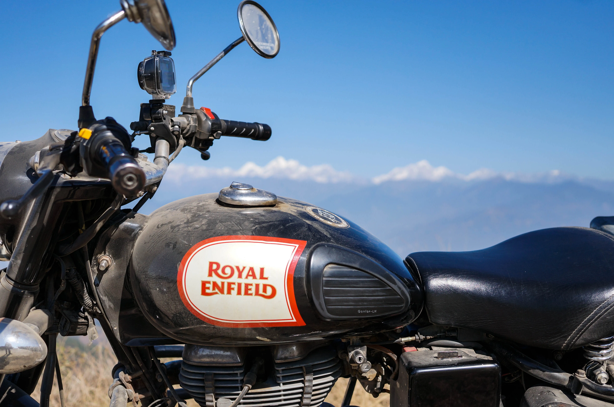
So the starting point was set, as well as the timing of end of November to middle of December, essentially winter on the subcontinent. Now I just needed to plan a route. I was briefly contemplating a drive through Punjab and Himchal Pradesh as well as a one way ride to Assam wit a flight back but both were quickly deemed foolish. Himchal Pradesh for its snowed in passes and Assam for the punishingly long journey and the expensive rail transport for the bike to return.
So I've set my eyes on Nepal. Luckily, I can get a visa on arrival and learned that the weather will be very favourable during this time of the year. So now it was only a matter of choosing the right route to take. I have a pretty tried and true way of travelling: I plan my daily route with attractions on the way and an end point where I have a couple of hotels lined up to check. I don't book anything in advance and I go as I please. If there is a change in the schedule, I adapt on the fly. This was the case with this trip as well. So let us delve into it, shall we?
Day 1 — Delhi
The first day I spent getting over the 5 and a half hour time difference and just hanging out with friends in Cyber City, Hauz Khas and such. A good day to get used to the hectic Delhi traffic, the noize and the intensity of India all over again.
Day 2 — Dashing for the border
I took hold of the bike, a trusted Royal Enfield Classic 350 with added luggage boxes and fuel cans and got out of Delhi as fast as I could. My plan was to reach the western border town of Khatima by nightfall.
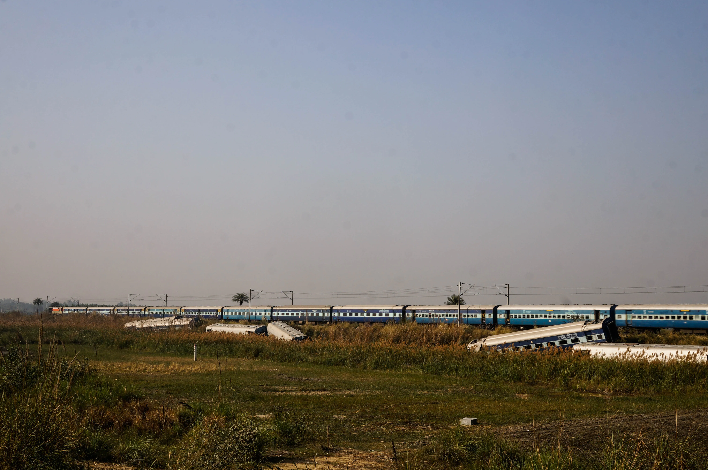
The trip started well, wide open roads and sunshine all the way to Moradabad. After that I went for Rudrapur even though all travel accounts I read said the roads are horrible that way. And they were right. Fog creeped in as well making for a chilly and not at all pleasant ride. Night fell quickly and from Kichha on I was driving at night, not something you want to do on the small back roads of India. I stopped at the Sikh holy place of Nanakmatta before finally reaching Khotima. Some locals helped me find a hotel, which was welcome, but the one they suggested was the worst hotel of the trip. Seriously, stay away from Hotel Best View in Khotima. So the first day was tiring and brought me uneasy sleep, but at least I was at the border.
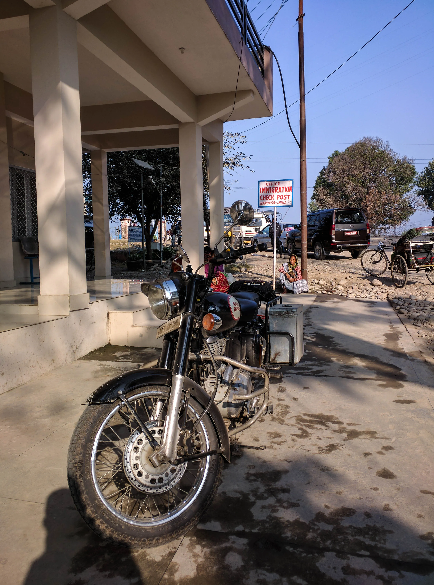
Day 3 — Crossing the border and reaching Kohalpur
Next day I got up early and made my way to the border. Got delicious breakfast on the way, you can't beat roadside toast and tea in the morning light. Filled my tank to the brim with petrol and pumped my auxiliary cans full too, fearing a petrol shortage in Nepal, something that was totally unwarranted. Better safe than sorry though, right?
Crossing the barrage and the various border offices of the most western border of Nepal at Banbasa was easier than I imagined. Not many foreigners enter the country this way and it is a pretty sleepy border post in general. Roads were terrible, people smiling and the sun shining, it was a positive experience for sure.
Reaching the tiny immigration post on the Nepal side was easy, got my visa on arrival without a hitch and exchanged some euros at pretty good rates. Got my road tax paid and I was on my way, in Nepal at last.
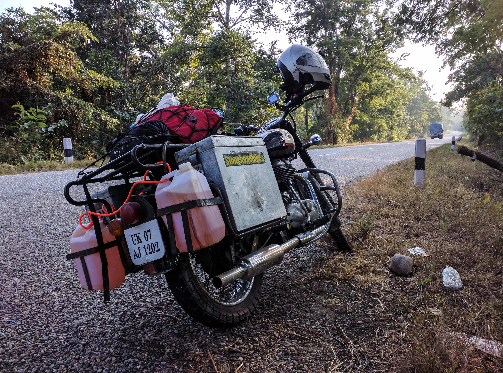
The rest of the journey was pretty uneventful, the Western Terai region is devoid of almost any attractions, there is just the jungle, plains and Tharu farmhouses as far as the eye can see. I stopped at a small restaurant where upon asking me where I was from the owner got really excited. Turned out there was a woman staying at the guesthouse who was also from Hungary. She stayed in Nepal for years now, her hungarian deteriorated but she gave me some valuable information. She suggested I abandon my plan on making it to Tansen by sundown since it was about a day's drive away and warned me that in the Dun forest, travellers get robbed all the time. She suggested a hotel in Kohalpur, a dusty transit town with no interesting things what so ever, so this is where I stayed for the night.
Day 4 — Into the mountains
The next leg of the trip to Butwal was uneventful. Good roads, straights through the jungle and the supposedly terrifying Dun forest. From Butwal turning on the Siddharta Highway I was finally in the mountains. Road conditions varied but it was mostly a pleasant ride all the way to Tansen where I was faced with the day to day evidence of Nepal's fragile political system. There were trucks with loudspeakers all over town calling for a strike and there was a demonstration on the main street.
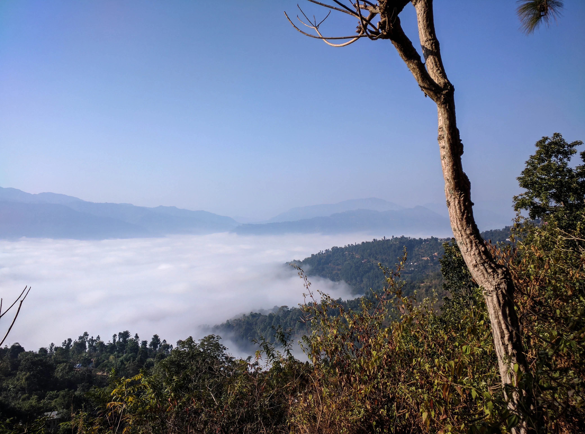
I reached the little guesthouse I looked up beforehand by around 4pm and made my way around town. In retrospect, Tansen was a very mediocre town in terms of historical places but it was the first one for me in Nepal so I had a great time among the old houses and temples. For sunset I made my way up to the viewpoint where I got a tiny glimpse at the Himalayas by the light of the setting sun. Again, it was nothing spectacular in hindsight but in that moment, I found it amazing.
Day 5 — To Pokhara
The next morning, people urged me not to get on the bike since there was a strike in effect but I couldn't stay. So I took some tiny back roads and dirt track shortcuts and reached the highway towards Pokhara in no time. Riding on majestic curvy roads while clouds were sitting below me in the valley was truly an experience to remember.
Before long I reached Pokhara and made my way to Lakeside, the touristy area and it was a big change of scenery. I had a proper espresso and banana pancakes with a view to the lake. Exchanged money and found shelter at the 3 Sisters Guesthouse, it was good to relax a bit. I made my way into town and walked around, quickly realising that the touristy stuff can only be interesting for so long. So for sunset I made my way up to the World Peace Pagoda, not by foot but by bike of course.
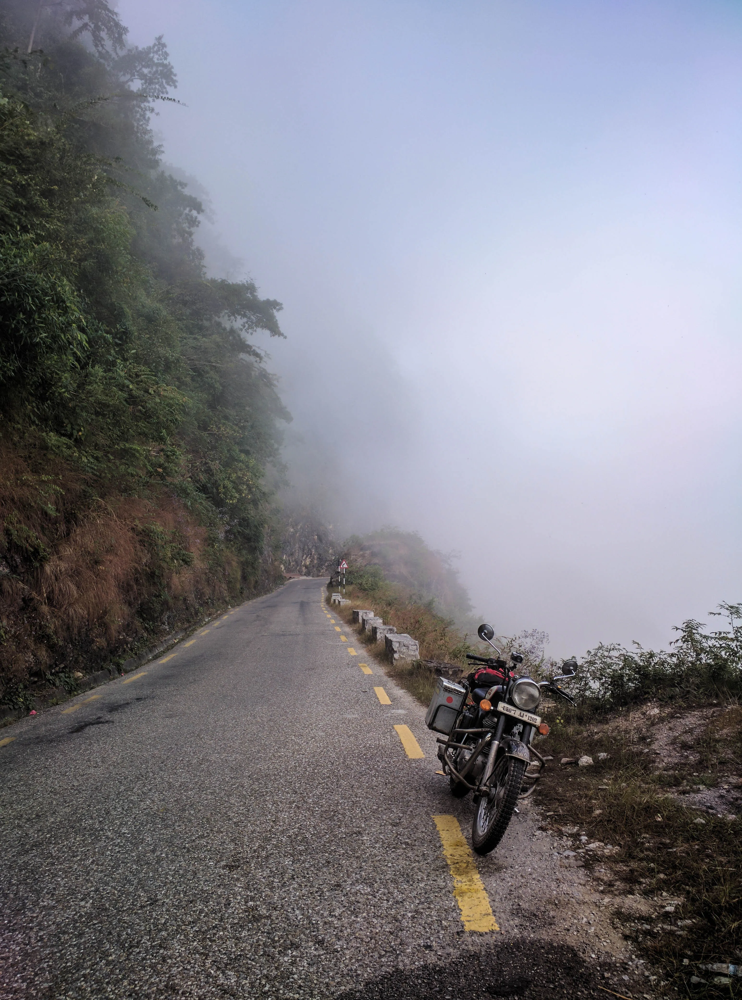
Sadly the weather was very cloudy so I didn't see the majestic Himalayan panorama, but the Pagoda was nonetheless beautiful. The lake and the city were glimmering in the sunset while a monk was chanting and performing a ritual around the pagoda. In the evening, I went to a Thai restaurant that I barely found and was pretty expensive, but sometimes it's nice to get a treat.
Day 6 — The road to Bandipur
After I got up at 4AM I made my way up to Sarangkot, to watch the sunrise against the backdrop of the Annapurna range. It was a long and twisted road up the mountain with occasional patches of really rough dirt roads. The ridge was pretty commercialized and full of people. It was again a cloudy day and most of the crowd left with dissapointment by the time the mountains showed themselves. It was worth the wait though for majestic panorama.
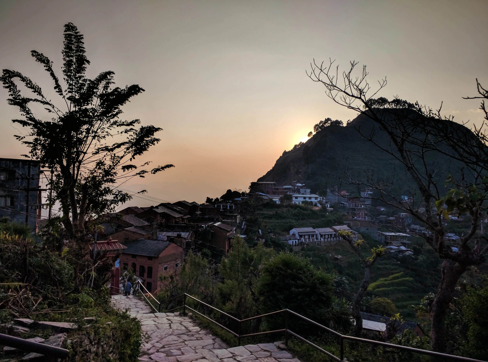
After checking out and having a nice cup of coffee in Lakeside I made my way towards the goal of the day, the small village of Bandipur. The road outside of Pokhara was really bumpy and I blame the earthquake. Made a little detour towards Bagnas lake and although it was all right I'd say you can skip it. Reaching Bandipur is only possible riding a narrow, winding road uphill from the main road and it was a great drive indeed. Starting from the fog and ascending rapidly finally reaching the ridge with the village in sparkling sunshine.
You cannot enter with a bike to Bandipur and I left it with a guesthouse for a modest sum. Checked into a hotel and took a nap since the winding roads and waking up early took a toll on me. I was 6 days into my journey with around a 1000 kilometers behind me. The bike was holding up well but I got tired a bit by this time.
Day 7 — Bandipur to Kathmandu
Waking up early and climbing the ridge over Bandipur once again rewarded me with sweeping mountain views and a beautiful sunrise. I took the road down and continued to Kathmandu tired, and a bit sad to leave this marvellous small village.
After stopping for tea on the way, I noticed I was at about the fork in the road that leads to Gorkha, a detour for sure, but one I deemed worthy of taking. And how right I was. Although Google Maps took me up to the Durbar on horrible back roads, the palace was stunning, truly a sight to behold.
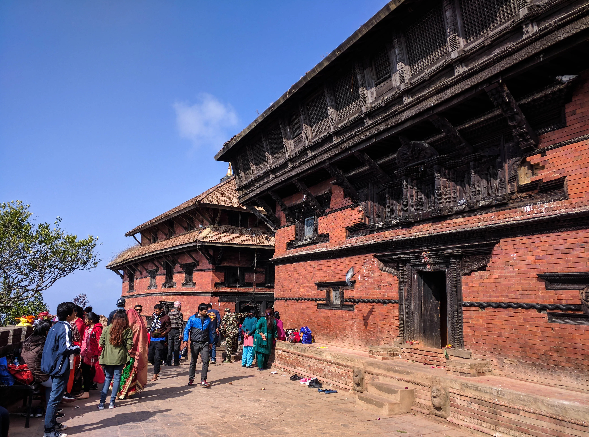
I reached Kathmandu in the late afternoon and my initial thoughts were not very good. The roads leading into the city were dusty and crowded with traffic that only got worse once I reached the ring road. I made my way to the Benchen Vihar Monastery compound to book a room and then climbed up to Swayambhunath for some awesome sunset vistas.
Day 8 — Patan and Bhaktapur
This day was meant to be all about ancient temples and small alleyways, and it was. Patan is a wonderful collection of small streets and hidden temples and squares. The highway to Bhaktapur is not nice, but the city itself is a jewel of Newari style architecture and a living, breathing example of an ancient capital.
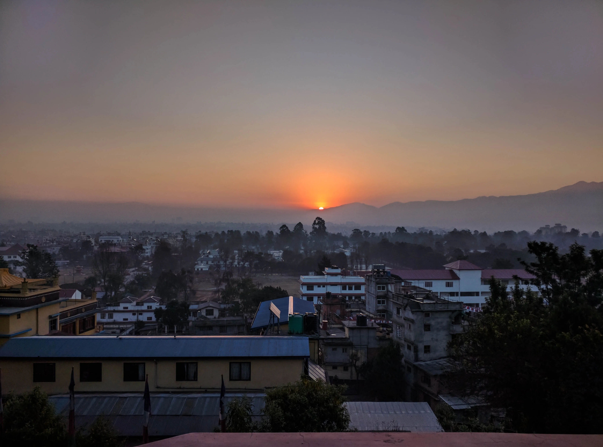
I took my bike out to Changunarayan temple, the oldest one in the valley. Sadly there is a lot of earthquake damage in all of these areas, temples have crumbled and some families still live in shacks. Road conditions are okay, but the traditional brick paved streets of Bhaktapur really took a toll on my back.
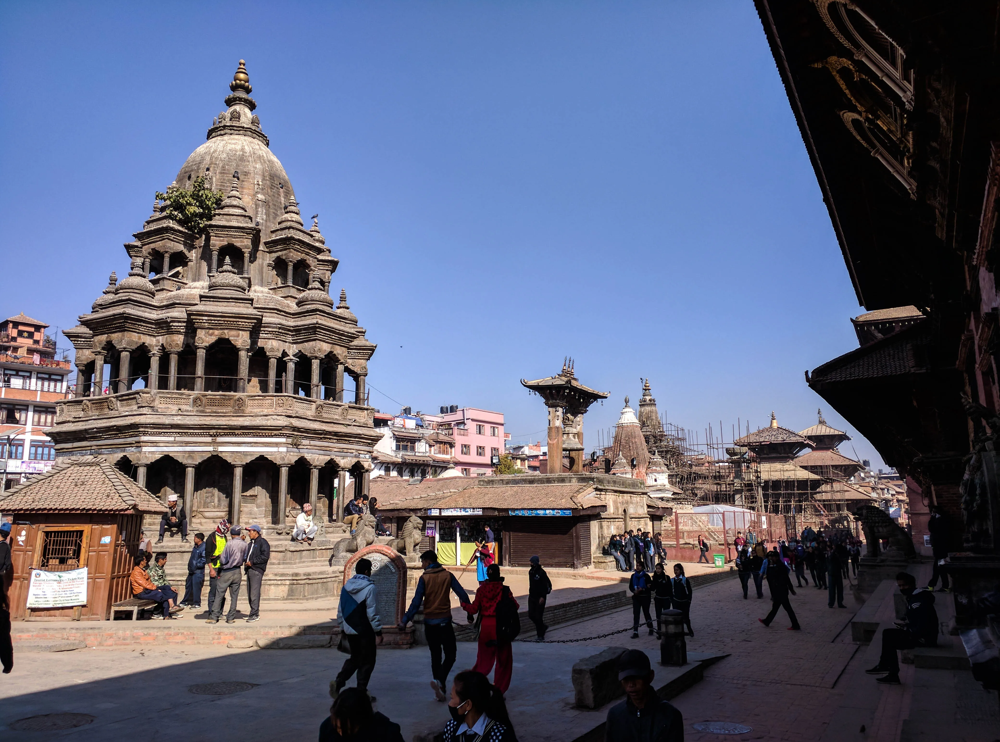
Walking around in the evening in a city that just oozes history is definitely worth it though. Try the king curd and the tiny momos shop on the main street leading to the north. Let yourself get lost in the atmosphere of this bustling settlement.
Day 9 — Back to Kathmandu and fixing the bike
So I knew I had to get the bike serviced, I asked for a recommendation beforehand too, but I didn't expect to have to change some parts as well. But let's start at the beginning. I left Bhaktapur early morning and headed to Nagarkot where there were said to be beautiful Himalayan views. Well, they are not bad, but not better than at other ridges across the valley. Roads were pretty nice until I reached the city, winding curves through pine forests with crisp mountain air and little traffic.
After Nagarkot however, the road became a dirt track yet still winding and pretty scary at places. What was worse, my bike's front wheel started to make horrible grinding noises, it was clear the bearings were starting to give up. With the gimped bike I was slowly descending towards Kageshwari Menohara from where the roads were again tolerable but the noise only got worse.
I rolled into the Bouddhanath Temple compound knowing that I had to get the bike serviced today. Had a touristy lunch at Himalayan Java Cafe and walked around the magnificent stupa before calling the service station and booking an appointment for an hour later.
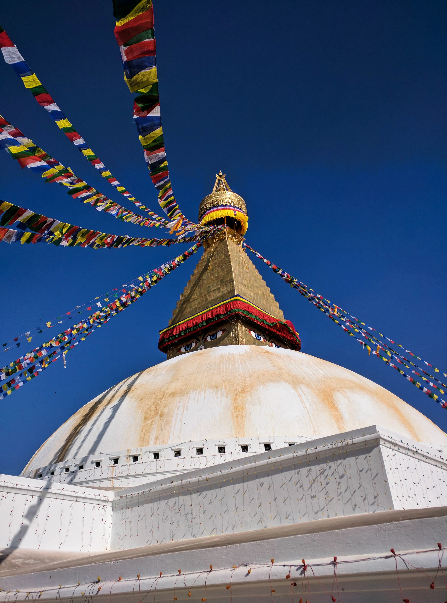
The service center was very professional, the official one for Royal Enfields in Kathmandu, they got to inspecting the bike right away. Turned out both the front and the rear bearings had to be changed as well as the rear axle. It took around 90 minutes for the work to be done and a general checkup of the bike carried out and I was on my way just before sunset.
I headed to Pashupatinath temple where there was an elaborate and festive funeral going on. Somebody important must have died since there was a lot of pomp and the funeral was held before the main temple, something reserved for royalty, according to my readings.
I went to the Thamel on my way to the monastery to exchange some money and get some food. I didn't really like the Thamel to be honest, too touristy, busy and loud. I seldom went there except for exchanging foreign currency.
Day 10 — The long way down
It was time for me to head back to Delhi, I knew there was still a 1000 kilometers to go and I had a deadline to get back, so I started one day earlier than planned. I decided to take the small roads out of Kathmandu to Dakshinkali temple near Pharping. This is the famous Kali temple with animal sacrifices and it was Tuesday, when the temple is especially busy. The roads were bad to say the least and it took me a while to find the temple hidden in a deep valley. It was quite staggering, goats went in alive and came back as meat. Still, it was an interesting cultural experience.
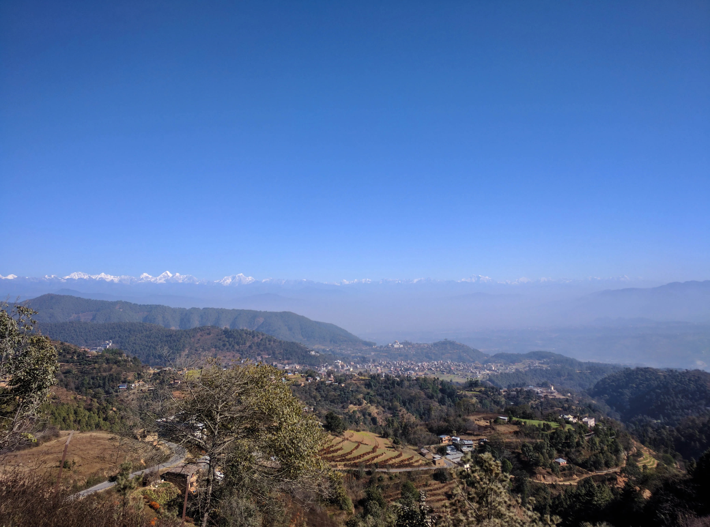
After Dakshinkali I pushed on towards Markhu reservoir not knowing it will be the worst drive of the trip. Roads were somewhat okay until Fakhel where I got my last glimpse at the Himalayas on the horizon. The road down for here though was really painful, under construction but hardly motorable. It was the slowest and most tiring stretch of road I've taken during the whole trip. I finally reached the reservoir and the road was paved once more.
I turned west at Hetauda and was rumbling through the jungle on my planned stop at Lumbini. However, since the time lost on bad roads, reaching my intended destination proved difficult, so I stopped for an overnight stay at Chitwan national park. I arrived at around 4PM, but took a nap as I was dead tired. I had wonderful street food in the evening and managed to exchange a bit more cash for the rest of the journey. At dusk I saw an elephant lumbering towards me on the road, a majestic sight indeed.
Day 11 — Lumbini
Next morning I made my way to the riverside at Sauraha where an elephant was having a bath. After, I had some cappuccino and an english breakfast since this town is also pretty touristy. By around 10:30AM I was on my way towards Lumbini. And this is where the fog started that made the next 3 days of riding pretty gloomy.
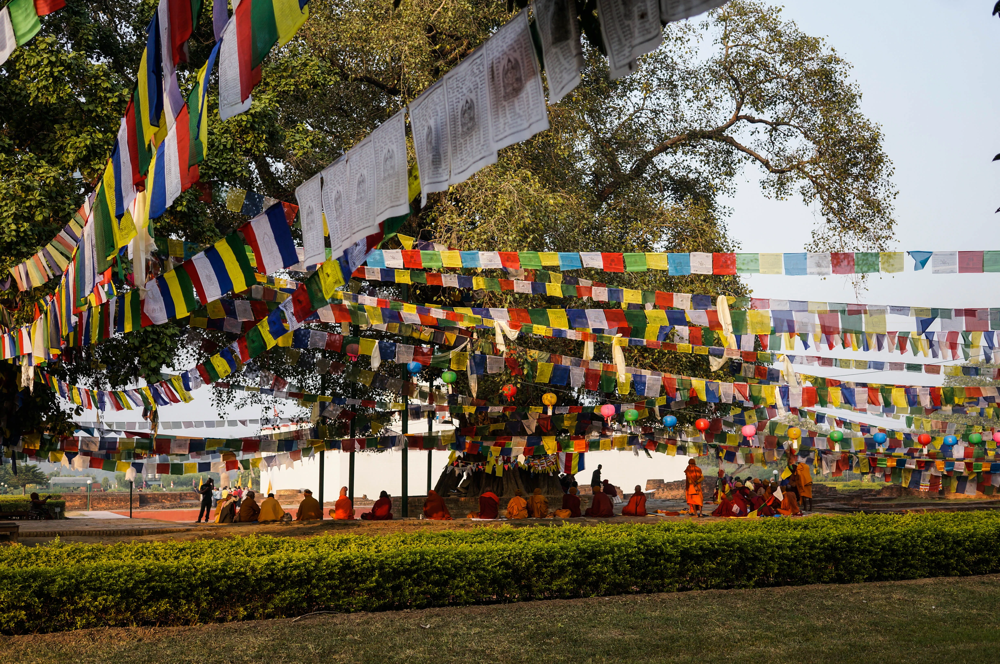
I reached Lumbini, the birthplace of the Buddha in the afternoon, found a pretty bad hotel room, but it was at least cheap and since this was my last day in Nepal, I didn't have much cash left. The monastic compound is huge and I had to leave my bike a little further away from the center. After a bit of walking, without my shoes and 500 rupees lighter I finally entered the main area around the temple ruins that house the stone where the Buddha was said to be born. This is truly a magical place, walking amongst the ruins of millennia old temples. Monks sitting around a huge tree and prayer flags flapping in the wind. I stayed until sundown.
Day 12–13 — The way back to Delhi
This was the toughest part of the trip, driving more than 700 kilometers in 2 days in Uttar Pradesh is no easy task, but it had to be done. Next day, the fog persisted and it was really cold. Even with all my gear, I was still cold. Crossing the border was pretty straight forward again, even though Sonauli is a much busier border town. The customs officers didn't have winter uniforms yet, so they wore leather jackets and looked like ordinary thugs, I didn't want to give them my passport at first. Luckily this didn't get them angry.
The fog made everything look unappealing and ugly, roads were slippery too. And if you think drivers in India and Nepal are bad, you haven't been to Uttar Pradesh, they are the worst, trucks pull out to overtake even when they clearly see you and you honk and flash them as much as you can, they still push you down onto the curb.
I aimed to reach Lucknow and took the road through Faizabad, hoping to get on the Agra — Lucknow expressway, like Google suggested. It was getting dark by the time I reached Lucknow and foolishly went into the city rather than taking the ring road. And I didn't stop to find a hotel, another mistake. My thinking was, that I will find a motel on the highway, there are usually some along major roads. The only problem was, the highway wasn't there, it wasn't completed. So I was stranded in the darkness with my plan in complete ruins. And somehow I decided to push on. You really don't want to drive these roads at night. Luckily, I found a convoy of newly commissioned police cars, driving to some unknown destination into the night, so I decided to join them. I was following the flashing lights for what seemed like eternity. Finally I stopped for fuel and asked around for accommodation. They said there will be some in the next town, Bangarmau, but I couldn't find any. Luckily, a young boy approached me and tried to help me out, we went to several closed hotels and finally, he suggested I stay at their place, reluctantly, I accepted. They were very nice to take me in, if a bit too friendly, but it is understandable. I was happy to get some rest after a long journey.
The next morning, I headed out after a simple breakfast with the family. I was planning to take the expressway to Agra since people told me it is open from here. Well, it wasn't. So I pushed on, following the railway on the number 34 highway, still in fog and still cold. I remembered from my previous travels, that the Agra — Noida expressway actually exists and that it is very nice, so after a while on the 34 I decided to go towards Agra, hoping to make up for the longer route with better driving conditions on the expressway. Finally I reached the Agra ring road and got onto the expressway to Noida. Along the way I was basking in western delights like a really bad pizza and expensive Costa coffee, but it was very nice to stop for these on the long road.
Day 14 — The last day in Delhi
Since I arrived one day earlier than planned, I had a day to drive around Delhi and visit some places I haven't been able to get to before. This meant finally checking out Qutub Minar, a truly magnificent piece of Mughal architecture. Afterwards, I drove to Select City Mall and lounged around, had some coffee and bought a book for the flight back. I still had some time after lunch so I decided to drive into New Delhi and check out India Gate again and the beautiful administrative buildings in the district.
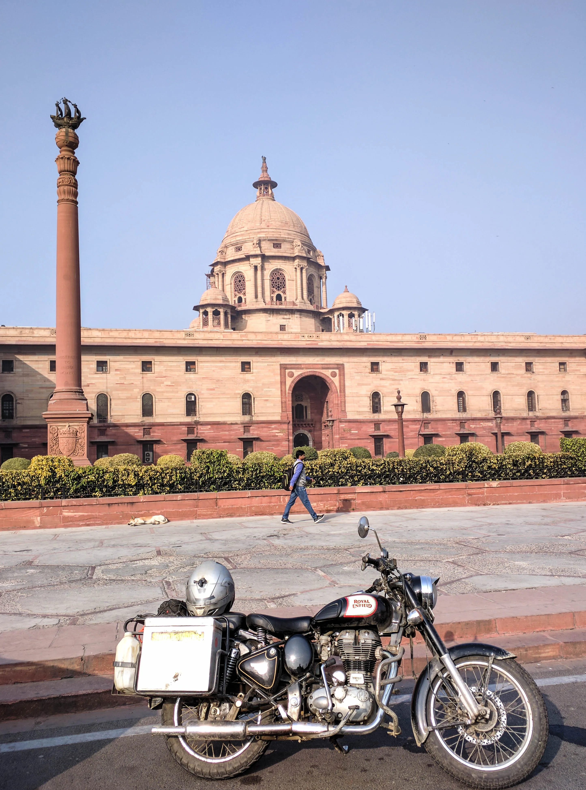
I got back to Stoneheadbikes at around 4PM and handed the bike back to them, got an Uber and headed straight for the airport. All together, this was a very rewarding, exciting, sometimes challenging and tiring, but all together beautiful adventure. I would recommend it to anyone who is an experienced driver and doesn't mind improvisation now and then. The people of Nepal are some of the nicest I met on my travels, and the mountains are breathtaking. Although a lot of monuments were destroyed in the 2015 earthquake, there is still a lot to see and do around the major tourist destinations of Pokhara and Kathmandu. I say check it out.